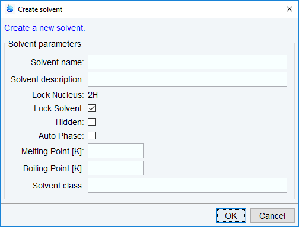

edsolv
NAME
edsolv - Edit solvent table
DESCRIPTION
The command edsolv opens the solvent table (see the next figure).
This table contains one line for each solvent and shows the solvent name and a short description. For edsolv, the Solvents tab is automatically selected and highlighted. Please note that the same table is also opened with the edlock command. Then, the Lock tab is automatically selected and highlighted.
The Solvents tab offers the following functionalities:
The Edit tab offers the following functions:
- Add new solvent
- 
- The easiest way to add a new solvent is to right click on an existing solvent with properties close to your new solvent. Select Copy and paste solvent to copy from this existing solvent to the new solvent. Enter the name of the new solvent and its description.
- Example: For a new solvent CD2Cl2 right click on CDCl3, which has similar properties. Enter the name of the new solvent CD2Cl2 and in the description field, enter dichloromethane-d2. For the CD2Cl2 example, enter 176K for the melting point and 312K for the boiling point. These two values are just reference for now but might be used in future. You can define the solvent as hidden, specify if this solvent is used as lock solvent and activate the Auto Phase mode.
- Change to the Lock Parameters by clicking the Lock tab, select the new solvent and right click to select Edit Lock parameters. You'll find all parameters of the solvent used for copy and paste in the first step.
- In the Signals part, change the shift in ppm according to the signal used for locking in your new solvent. For the CD2Cl2 example, change the shift of the dichloromethane resonance to 5.33 ppm.
- You might want to optimize further lock parameters as described in Optimizing Lock Parameters (see edlock)
- Select the spectrum reference tab, right click the new solvent to select Edit spectrum reference parameters. Adjust the reference shift and search width according to your needs. For the most commonly used reference standard TMS just leave the reference shift at 0 ppm and the search width at 0.5 ppm. In this case the search range is +/- 0.25 ppm around 0 ppm, which is suitable for TMS.
- Please note, all solvents not marked as lock solvents will only appear in the list if the Show no locking solvents is active in the Solvents pull down menu (see above). These solvents cannot be used with the lock command.
- Edit solvent
- The parameters entered here are shown when you click on the Properties tab. Double-clicking on a solvent line in the Properties table opens the Edit Solvent dialog.
- Delete solvent
- Copy and paste solvent
- Copy the selected probe to all solvent
- Copy probe to all solvents
- Delete probe from all solvents
- Search solvent
You can also right-click in the table to add, edit, delete, copy and paste or hide a solvent.
Before you start an experiment, you must set the parameter SOLVENT to an entry from the solvent table. If you do this from eda, you can click the arrow button to the right of this parameter and select an entry from the solvent list.